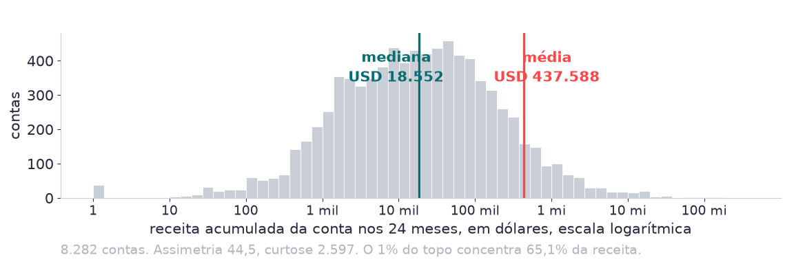
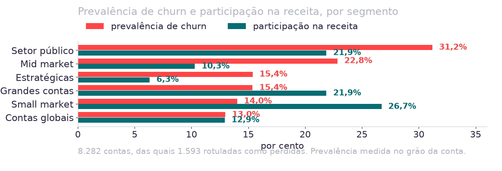
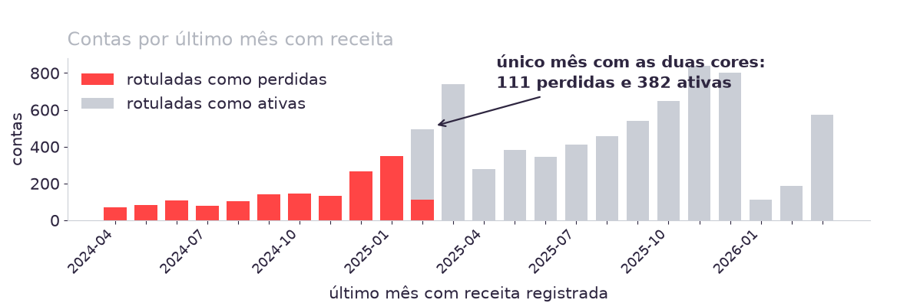

8.282
contas na carteira LATAM
24
meses, de 2024-04 a 2026-03
5
abas, com grãos diferentes entre si
1.593
contas que a base já marca como perdidas
O que a Aula 02 deixou
Uma skill de limpeza escrita para uma base que deixou de existir.
O que mudou na pergunta
O rótulo não precisa mais ser construído. Ele veio pronto.
O que a tarde apura
Qual critério esse rótulo usa e o que ele deixa de fora.
A skill que cada grupo escreveu na semana passada é o primeiro item a ser testado contra a base nova.
Fonte: datasets_case_modulo2.xlsx, cinco abas. Números travados em dados/tests/test_dataset_oficial.py.
Contrato do dia
Toda seção do artefato entra com o número e a figura que a sustentam, produzidos por código que roda na pasta do grupo.
Ambiente
Antigravity a tarde inteira, sobre a pasta clonada do repositório da turma. O dataset chega por fora e fica só na máquina de vocês.
Fecha hoje
Carga, qualidade, univariada e bivariada.
Vai para a semana
Rótulo, visuais e limitações.
O critério de aceite é a reexecução: outra pessoa clona a pasta, roda e obtém os mesmos números.
Duas abas com número de contas diferente não cruzam sozinhas, e a decisão de como cruzá-las é do grupo.
Fonte: datasets_case_modulo2.xlsx.
A chave quase não cruza
Das 47.185 contas com engajamento comercial, 44.140 não existem no painel. Só 3.045 das 8.282 contas do painel têm engajamento, ou 36,8%.
O grão temporal difere
O painel tem 24 períodos mensais no formato 2024-04. O engajamento tem 14 períodos trimestrais no formato 2023-2, e começa antes do painel.
O cadastro repete conta
100 identificadores aparecem mais de uma vez, com setor e país divergentes na mesma conta.
Valores fora do domínio
25 linhas de receita negativa, 143 zeradas, e 53 participações de marca ausentes, algumas negativas e algumas somando acima de 1.
Nenhuma dessas quatro estava na base da Aula 02, então a skill de cada grupo vai encontrar o que ela não previu.
Fonte: datasets_case_modulo2.xlsx. Contagens travadas em dados/tests/test_dataset_oficial.py.
Entendimento do negócio
Aula 01. A decisão de alvo do Comitê.
Entendimento dos dados
Hoje. Base nova, perfilamento novo.
Preparação
Aula 02, reaplicada à base de hoje.
Modelagem
Hoje entra a análise, o modelo fica para a UC2.
Avaliação
Aula 05, no veredito de alvo.
Implantação
Aulas 07 e 08.
Perfilar a base de hoje custa vinte minutos, e pular esse passo compromete todo número que sair depois.
Fonte: Chapman et al., CRISP-DM 1.0, 1999.
Quantas linhas o agente está vendo?
Se não bater com a fonte, o arquivo chegou quebrado.
Uma linha representa o quê? Procure a combinação de colunas que não se repete.
As chaves cruzam?
Junção que perde linha aparece com o número antes de ser usada.
Quantos vazios por coluna, e o vazio é zero ou desconhecido?
A resposta muda o tratamento e não está no dado.
Existe valor impossível? Receita negativa, participação acima de 1.
As cinco estão em skills/perfilamento.md, e o agente as executa sem que o grupo as repita.
20
minutos
- Formato
- Em grupo, na pasta clonada
- Entrega
- O arquivo perfil.md e a lista do que a skill não previu
- Checkpoint
- Cada mesa diz quantas das quatro advertências a skill encontrou sozinha
Clone o repositório e coloque o xlsx em dados/.
git clone https://github.com/josercf/inteli-pos-2026-2a-eda.git
Abra a pasta no Antigravity e peça ao agente que resuma as regras da sessão.
Se ele não citar a proibição de preencher lacuna, ele não leu o AGENTS.md.
Coloque a skill-limpeza-kovan.md do seu grupo dentro de skills/.
Peça as duas skills na ordem: perfilamento, depois a limpeza do grupo.
Execute skills/perfilamento.md sobre as cinco abas. Depois execute a skill de limpeza do grupo sobre a mesma base. Ao final, liste os passos dela que não puderam ser executados e por quê.
A mesa diz, com número, quantos passos da própria skill sobreviveram à troca de base
Tendência central
Média e mediana. Quando as duas divergem por uma ordem de grandeza, a média deixa de descrever qualquer caso individual, e o relatório precisa dizer isso.
Dispersão
Desvio padrão, mínimo, máximo e quartis. Responde o quanto os casos se afastam do centro.
Forma
Assimetria e curtose. Assimetria acima de 1 indica cauda longa. Curtose alta indica que os extremos dominam a variância.
Com assimetria de 44,5, a receita média por conta não descreve conta nenhuma da carteira.
Fonte: Dataset 1, 8.282 contas. Travado em dados/tests/test_dataset_oficial.py.

Os 5% do topo somam 84,4% da receita e os 10% somam 90,6%, com a média 24 vezes acima da mediana.
O Comitê pede a receita típica de uma conta. Qual número você leva?
- Média
- USD 437.588
- Mediana
- USD 18.552
- Assimetria
- 44,5
20
minutos
- Formato
- Em grupo, na pasta clonada
- Entrega
- As figuras em figuras/ e o arquivo univariada.md
- Checkpoint
- Cada mesa lê em voz alta a frase do que a figura não permite concluir
Rode a skill de univariada sobre receita, pedidos e tempo de casa.
Execute skills/univariada.md sobre receita_usd, qtd_pedidos e tempo_como_cliente. Declare o grão antes de cada medida.
Confira a escala de cada figura.
Assimetria acima de 3 pede escala logarítmica, declarada na legenda.
Peça a leitura de negócio de uma das figuras.
Explique este boxplot para quem nunca estudou estatística e não vai perguntar o que é quartil. Depois diga, em três frases, o que olhar nele para entender a perda de contas.
Escreva, abaixo de cada figura, o que ela não permite concluir.
Cada figura tem duas frases escritas embaixo, e a segunda diz o que ela não sustenta
O setor público reúne a maior prevalência e a segunda maior participação na receita, então ele é o único segmento em que as duas leituras apontam para a mesma prioridade.
Fonte: Dataset 1 e Dataset 4, 8.282 contas. Travado em dados/tests/test_dataset_oficial.py.

Prevalência e receita em risco produzem topos diferentes para a mesma fila.

Fevereiro de 2025 é o único mês com contas dos dois lados, e o corte que os separa não está documentado.
O que o painel mensal entrega
Inatividade de 13 meses marca 1.975 contas e captura 100% das 1.593 perdidas. Sobram 382 contas que o corte marca e o rótulo não.
Onde estão as 382
Todas em fevereiro de 2025, o único mês com contas dos dois lados. São 493 contas nesse mês, 111 perdidas e 382 ativas.
O que a aba de pedidos resolve
A última compra das perdidas vai até 08/02/2025. A das ativas começa em 10/02/2025. A separação é perfeita no dia.
Quem usou só o agregado mensal chega a treze meses e para em 382 contas sem explicação.
Fonte: aba raw data, data do último pedido por conta. Travado em dados/tests/test_dataset_oficial.py.
O corte de 13 meses marca a conta treze meses depois da última compra, quando não sobra intervenção comercial a fazer.
Fonte: Dataset 1, recência contada a partir de 2026-03. Travado em dados/tests/test_dataset_oficial.py.
O que a variável parece ser
Tempo de casa separa os dois grupos com uma fronteira limpa em 17 meses. Num modelo, ela apareceria como o preditor mais forte da base.
O que ela é
O rótulo exige treze meses de inatividade, e o painel começa quatro meses antes. Conta com menos de 17 meses não teve tempo de satisfazer a regra.
O teste que evita isso
De toda variável que separa muito bem, pergunte se a informação existiria no momento em que a decisão precisa ser tomada.
A fronteira de 17 meses é uma consequência da regra de rotulagem, medida sobre a janela do painel.
Fonte: Dataset 1 e Dataset 4. Travado em dados/tests/test_dataset_oficial.py.
Nenhuma conta com menos de 17 meses de casa aparece como perdida. Por quê?
- Contas com menos de 17 meses
- 4.494
- Perdidas entre elas
- 0
- Prevalência da carteira
- 19,2%
25
minutos
- Formato
- Em grupo, na pasta clonada
- Entrega
- A tabela de contingência e o critério recuperado, em bivariada.md
- Checkpoint
- Cada mesa apresenta o critério que recuperou e a evidência que o sustenta
Cruze o rótulo com o último mês de receita de cada conta.
Calcule o último período com receita de cada conta e monte a contingência desse período contra churn_label. Identifique o único mês com contas dos dois lados.
Desça ao grão do pedido para resolver o resíduo.
Na aba raw data, para as contas do mês de sobreposição, cruze a data do último pedido com churn_label. Existe uma data que separa os dois grupos sem exceção?
Meça o que cortes alternativos fariam com a fila.
Construa rótulos com cortes de 6, 9 e 12 meses de inatividade a partir de 2026-03. Traga o tamanho da fila e a receita marcada em cada um.
Escreva o critério recuperado em uma frase.
Sem recuperar, o registro é critério desconhecido. Isso também é resultado.
A mesa enuncia o critério do rótulo e mostra a tabela que o sustenta
01. Carga
As cinco abas carregadas, com a contagem de linhas conferida contra a fonte e o grão de cada uma declarado.
02. Qualidade
Cada advertência encontrada, a decisão tomada e o custo dela em linhas.
03. Univariada
Tendência central, dispersão e forma na mesma tabela, com a leitura escrita de cada figura.
04. Bivariada
Cruzamentos contra o rótulo, com tamanho de base em cada célula e a explicação alternativa que a medida não descarta.
A seção 06 alimenta o relatório de segmentação da manhã, que pede as visualizações da EDA da tarde.
65
minutos
- Formato
- Em grupo, na pasta clonada
- Entrega
- A pasta do grupo, com código, figuras e o relatório das quatro seções
- Checkpoint
- Às 15h30 cada mesa mostra a seção que está mais atrasada
Estação 1, quinze minutos. Feche a seção de carga.
Contagem por aba, grão declarado, contas em comum com o painel.
Estação 2, vinte minutos. Feche a seção de qualidade.
Uma decisão por advertência, com justificativa e custo em linhas.
Estação 3, quinze minutos. Feche a seção de univariada.
Aproveite as figuras da Prática 2 e escreva a leitura que faltar.
Estação 4, quinze minutos. Feche a seção de bivariada.
Aproveite a tabela da Prática 3 e acrescente um corte por setor.
Confira a reexecução antes de sair.
Liste os arquivos desta sessão e diga, para cada número do relatório, qual script o produz. Aponte os que não têm código.
Outra pessoa clona a pasta, coloca o dataset e obtém os mesmos números
22/08 · hoje
Fica pronto
Quatro seções do Artefato 1 e o critério do rótulo recuperado do dado.
29/08 · Aula 04
Visualização para decidir
As figuras que vão ao Comitê saem dos números que a pasta do grupo reproduz.
Manhã de negócios
Segmentação e personas
O relatório da manhã pede as visualizações da EDA, e a seção 06 as entrega.
05/09 · Semana 5
Artefato 1
Análise Exploratória de Dados, entregue como pasta reexecutável.
O rótulo que a base entregou marca a conta treze meses depois da última compra, e essa medida é o insumo do veredito de alvo da Aula 05.
Caso e dados
1. Kovan Technologies LATAM: A Definição do Alvo. Business case PL-02-2026, versão v2.
2. datasets_case_modulo2.xlsx, base oficial recebida em 21/08/2026. Não distribuída por este acervo, por ser dado real de carteira.
Frameworks citáveis
3. Chapman, P. et al. CRISP-DM 1.0: Step-by-step data mining guide. SPSS, 1999.
4. Tukey, J. W. Exploratory Data Analysis. Addison-Wesley, 1977.
5. Kaufman, S. et al. Leakage in Data Mining. ACM TKDD, 2012.
O que é nosso
O checklist de cinco perguntas de perfilamento, o checklist de sete seções do Artefato 1 e as três skills de agente foram organizados para este módulo, sem seguir padrão publicado.
O critério do rótulo apresentado hoje foi recuperado do próprio dado e está travado por teste, sem depender de documentação da fonte.